Открытие зимнего сезона
- 2008 - 2009 -
МАМАЙ
2.11.2008
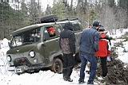 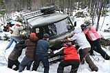 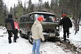
В общем-то заходили как обычно, приехав на электричке утром.
Из необычного - увидели застрявший на первом болоте УАЗ, мужики попросили
подтолкнуть, пообещав потом подвезти. Наивные ребята согласились :) Я
в этом безобразии принимал участие только как фотограф и потому пешком
дошел быстрее. Мужики на УАЗе - вот ваши фоты! (А то просили фотографии
и не записали адрес). И оставляйте машины перед подъемом, так же всем
проще:) Понаехали тут! :)
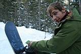
. 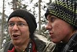
Андрей, Антон и Костя
"Наша Маша" уже прилично обжита - первыми заехали
в пятницу Катя (с Зуликом), Марина, Антон и Ксюша, потом в субботу Лёха,
Артем (который из Н-ска) и Эмиль. Сегодня воскресенье, зашел я, потом
подошли Андрей и Костя со своими друзьями и подругами. Совсем вечером
пришли Наташа и Лиза. Про соседние зимовья, иркутское и байкальское, ничего
писать не буду, долго :) Но там картина примерно такая-же - народ заходил
постепенно и много :)
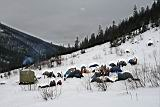
Это палаточный лагерь возле Кунга
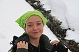
* 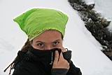
*
Маринка как картинка :)
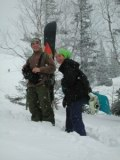 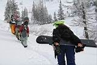
Ну, типа мы пошли первый раз кататься на Лесной :)
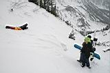
Ну че лежишь, дружище?
Вставай, проклятьем заклейменный!
Катись, проклятьем заклейменный!
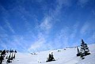
Ёлки-палки, склон Лесной
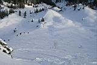
В этом году прилично раскатали Потусторонний склон Лесного. Обычно туда
редко кто едет, потому как потом тропить от туда долго. А в этот раз и
Гил на скитурах, и Черный Доктор на снегоступах, так что затропили:) Молодцы!
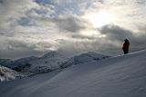
- 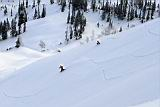
Гунер и Норик раскатывают Потусторонний
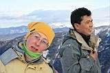
Настя и Чингиз, мои давние друзья из Улан-Удэ.
Вера из города на Уде! ты закосячила свое фото, не зачОт, на переСдачу!
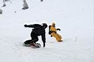
: 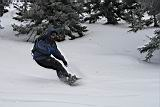
: 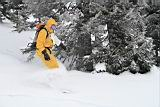
Вовка и Саня - МегоРайдеры!
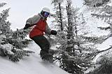
: 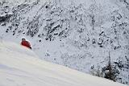
Норик тоже! :)
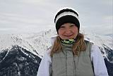
^_^ 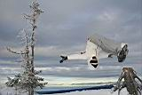
^_^ 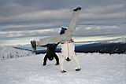
Катя и Марина. Сходим с ума на вершине холма :)
Видимо перестарались, потому как потом покатили втроем
и друг друга потеряли. Марина укатила в Веселый кулуар, я к тропе, а Катя
тоже к тропе, но через лес и ниже. Ну хорошо хоть все потом нашлись, а
то это дело такое, что лучше не теряться в горах по одному поздним вечером!
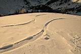
~ 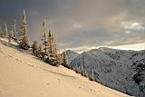
~ 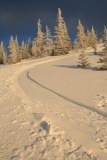
Поднимался в последний раз на Лесной - попал в закат!
Фрирайд по розовому снегу. Лучшее завершение первого катального
дня!
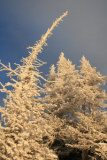
~ 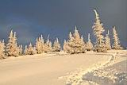
~ 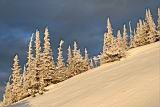
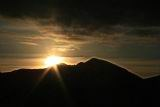
~ 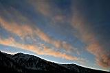
( В горах многие не говорят "в последний раз",
говорят "в крайний раз". А мне это как-то слух режет, так что
извините, господа-альпинисты и к ним себя причисляющие :)
ПЕРВЫЙ ДЕНЬ ФРИРАЙДА ЗАКОНЧИЛСЯ,
А ТЕПЕРЬ НАЧИНАЕТСЯ САМАЯ ВЕСЕЛАЯ ВЕЧЕРИНКА!!!
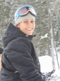
ВЕРА, С ДНЕМ РОЖДЕНИЯ !!!
УЛЫБАЙСЯ ВСЕГДА !!!
(хехе, я-то самый первый и поздравил, и подарок подарил
:)
У байкальской зимухи был накрыт стол у костра,
было много вкусного и пьяного,
была веселая музычка,
были такие таланты импровизации,
которым нипочем ни стриптиз, ни Зайцы с Мазаем,
и вообще, кого и чего только не было :)
Все прИдури и им сочувствующие отрывались по полной :)
- Snow-People = Magik-People -
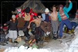
\|/ 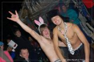
Чумовые фоты от Сани Сизова. Саня, WE A PEOPLE TOO ! :)
Развеселые цигане па-а-а Молдавии гуляли,
И в одном селе богатом ворона-а-а коня украли.
А еще они украли молоду-у-ю молдованку,
Посадили на полянку, воспитали как циганку...
Сантиметры твоего дыханья, киноленты наших раставаний
Жгут, как сотни больших огней (е-и-ей)
Обещаний нет и быть не может, только имя мне твое поможет
Жить несколько светлых дней...
Я помню каждый взмах твоих ресниц, я слышу ветер в волосах
Я знаю сантиметры дыхания..
Захар Май однозначно рулит :) !!!
3.11.2008
Да, вчера, после того как все пошли спать после буйной вечерины, отдельные
личности сидели у костра и орали всякий бред, типа "Зулик - Большой
Человек! Зулик - храни его Джа!" %). И не только орали, но еще договорились,
что завтра встанут пораньше и пойдут строить трамп в клевом месте, и прыгать
и прыгать, и фотать и фотать! И надо сказать, что эти прыгуны достаточно
резво с утра убежали, да так, что я их вспотел догонять на Лесном, хоть
и шел по пояс раздетый. В итоге залезаю на Лесной и вижу прелестную картину...
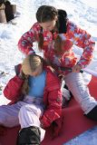
... нет, не эту. Эту я возле кунга увидел, когда мимо пробегал
:) Ну так вот, отвлекся... Еще раз отвлекусь - это я так специально долго
рассказываю, потому что было много вопросов на тему "куда я пропал"
:) Ну так вот, с вершины Лесного наблюдаю, как три чувака строят трамплин
внизу Потустороннего склона, и причем место выбрали козырное - и солнечное,
и горы на фоне красивые, и разгонка с приземлением какие надо! Ну думаю
- "МолодцА! Ай да Саша, ай да АльпинФокс!". Быстренько встегиваюсь,
стартую с Лесного, прыгаю с дропа, удачно заземляю и добавляю свой росчерк
на докучи расписанный Потусторонний склон. Подхожу к зарывшимся возле
трамплина шэйперам, и что же я вижу? А вижу я Серегу Чукотку и еще двух
незнакомых парней!
"Хде-е-е эта сволочь!" (с) Особенности национальной охоты :)
Ну и чё?, не тащиться же обратно и опять искать, где там
наши удумали трамплин строить. Тут уже вона, одной лопатой и двумя сноубордами
какую кучу уже нарыли, тоже молодцы, надо поддержать их своей лопаткой!
Ну и поработали, и чай попили с бутерами, и музычку врубили, потом еще
поработали на благо фристайла, не трамплин получился, а сказка! Правда,
когда пришло время прыгать - солнце за тучи скипнуло, так что фоты немного
серые получились, да и фик с ними. Я лично для удовольствия прыгаю, а
не для фоток :)
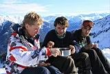
~ 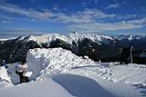
~ 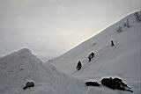
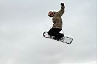
~ 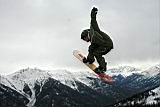
~ 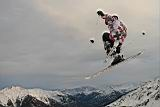
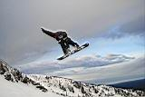
~ 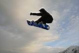
~ 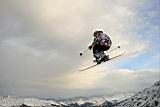
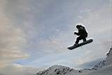
~ 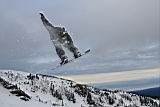
~ 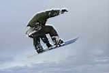
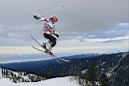
~ 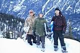
Да, потом еще Андрей подошел, когда мы уже прыгали.
На закате выползли на Лесной и катанули до кунга.
Серега, Миха, Витя, Андрюха - респект, все было клево!
Ну и понятно, что наши меня весь день теряли! Ладно, хоть
время не теряли - устроили расколбас на 4-х (!) трамплинах, все сделали
фронт-флипы и даже чай сварили "не отходя от кассы" :)
Фотографии Антона Климова
( эти и другие фото Непоколебимого Гуру на http://nepokolebim.livejournal.com/27305.html
:)
Маринка была героем вечера -
вывихнула плечо и по такому поводу решила напиться,
впервые за долгие годы :)
4.11.2008
Кто-то сегодня отдыхает, а кто-то и работает :)
Бригада Андрея Савченко доделывает крышу на объекте.
Ндяя... мы ровно год назад такой же фигней страдали,
а теперь ходим и в носу ковыряем :)
А байкальчанам вот тоже надо бы свой объект доделывать,
но они положили... Ага, положили два бревна на каменюгу и скользят по
ним в небо, а потом в сугроб падают. Веселятся парни! И девченки не отстают!
/
Антоха Ниндзя
/
/
Верка без парашюта летает :)
/
Олька тоже парашют забыла :)
/
/
/
Серега Космонавт гравицапу вчера кому-то подарил, и теперь падает :)
||
||
||
Даня лыжики катапультирует. Или они - его ? :)
Тёма, птица высокого полета :)
А еще у них там персональный склон есть.
Чую, там скоро сноу-парк будет :)
Андрюха Самурай - имеет белый пояс,
не буду говорить в каком виде спорта :)
Лёха Иркутский, Эмиль, Наташа и Лиза
.
.
Небольшой фотосет перед дальней дорогой домой
Би-би!
Ксюша и ее заи&атая машина :)
А там горы высокие, там степи бескрайние,
там ветры летят по просторам пыля
Мы дети Галлактики, но самое главное -
мы дети твои, дорогая Земля!
Фото - Лёха Слюдянский, Саня AlpineFox Сизов, Антон
Климов
Комментарии - Лёха Слюдянский
Ноябрь 2008
|